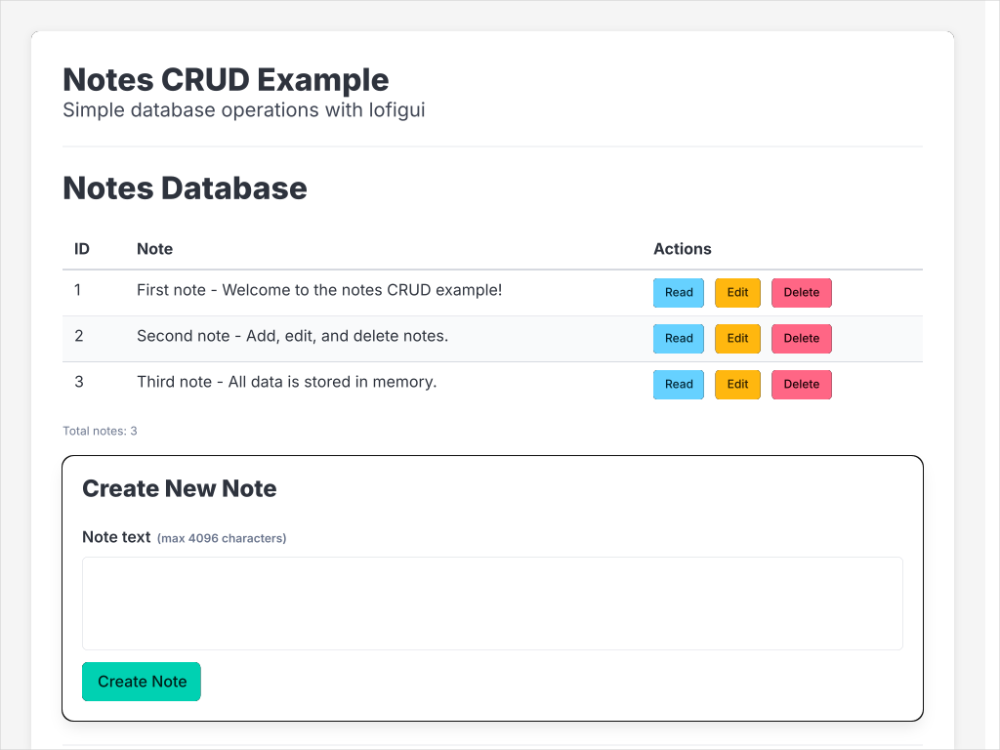
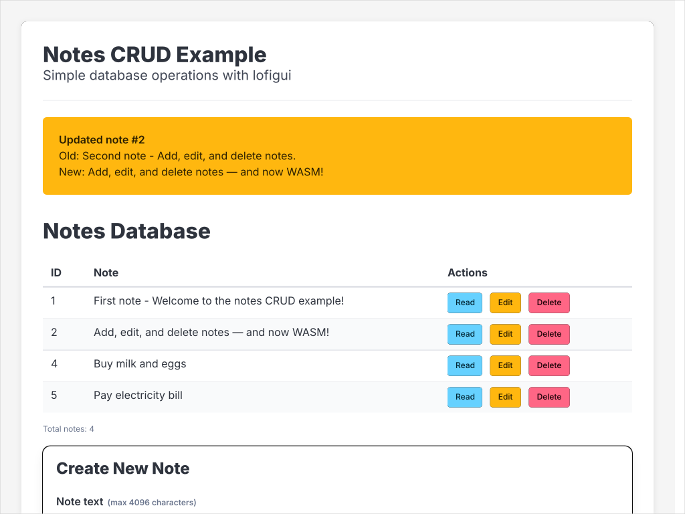
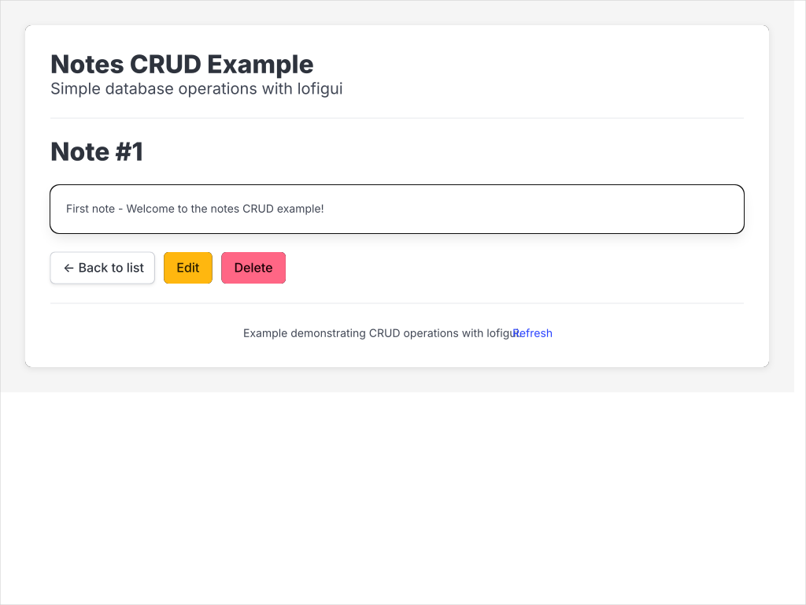

06 — Notes CRUD
Smallest interesting CRUD app: a numeric-keyed in-memory map of notes, a master / detail UI with per-row Read / Edit / Delete buttons, and the Post / Redirect / Get pattern. One Go codebase, two deployment targets — a real HTTP server (main.go) and a browser-only WASM build that runs the same *http.ServeMux inside a service worker (main_wasm.go). A Python implementation alongside the Go one shows the same shape with FastAPI.
Each POST handler mutates the notes map, stashes a one-shot flash message describing what it just did, and redirects with 303 See Other — to ./ (back to the list) for create / delete, or to ../{id} (back to the detail page) for update. The next GET consumes the flash, prepends it as a Bulma notification, and renders the requested view.
Interactivity level: 4 — Static + forms (CRUD pattern, no polling) State scope: Global (server build — one shared notes map) / Individual (WASM build — each browser's SW has its own seeded notes)



All three captures are produced by task docs:capture:06, which drives the server with a sequence of curl POSTs. The capture asserts every POST returns 303 See Other, the validation cases (oversized text, non-existent ID) flash the right error, and the rendered SVGs contain the expected note text — the screenshots double as an integration test.
How lofigui helps here
Six things from the library are doing real work in this example:
lofigui.Reset+lofigui.Buffer— the lofigui buffer is a process-global accumulator. Every handler resets it, prints the page-specific content, and readsBuffer()into the template's{{.content}}slot.lofigui.HTML— writes raw HTML into the buffer (use this for chrome and notification markup; usehtml.EscapeStringseparately on user-supplied text). The original version of this example usedlofigui.Print("<h2>…</h2>")and ended up with literal angle brackets on screen —Printescapes by default;HTMLdoes not.lofigui.NewControllerFromFS— parses the embeddednotes.htmltemplate once at startup (read from//go:embed templates, the only filesystem a WASM build can reach).Controller.RenderTemplate— writes to anyhttp.ResponseWriter, so the same call works fornet/http.ListenAndServeandgo-wasm-http-serverinside a service worker.Controller.StateDict— pre-fills the template context withversion,name,polling,refresh(no-op here since this example doesn't poll) so the handler only adds CRUD-specific keys (content,base).lofigui.ServeFavicon+lofigui.ServeBulma— registered alongside the CRUD routes. Bulma loads from local/assets/bulma.min.csson both server and WASM builds — no CDN round-trip.
Everything else — the redirect-after-POST cycle, the form parsing, the in-memory map — is plain Go standard library.
The route table
| Method + Path | View | Redirects to |
|---|---|---|
GET / |
Master list — table of notes with per-row Read / Edit / Delete | — |
GET /notes/{id} |
Detail page (the "Read" button target) | — |
GET /notes/{id}/edit |
Edit form pre-filled with the current text | — |
POST /create |
(form on master) | ./ (list) |
POST /notes/{id}/update |
(form on edit page) | ../{id} (detail page, so the user sees what they saved) |
POST /notes/{id}/delete |
(form on master + detail) | ../../ (list) |
GET /favicon.ico |
(lofigui.ServeFavicon) |
— |
GET /assets/bulma.min.css |
(lofigui.ServeBulma) |
— |
The model — model.go
model.go is shared between the server and WASM builds. It owns the notes map, the CRUD operations, the flash channel, the view renderers, and the *http.ServeMux builder.
State + flash
const MaxNoteSize = 4 << 10 // 4 KiB cap on note text
//go:embed templates
var templateFS embed.FS
var (
mu sync.Mutex
notesDB = seedNotes()
nextID = 4
flashMsg string // one-shot notification carried across PRG redirects
)
func seedNotes() map[int]string {
return map[int]string{
1: "First note - Welcome to the notes CRUD example!",
2: "Second note - Add, edit, and delete notes.",
3: "Third note - All data is stored in memory.",
}
}
demo.html recovery stub does that, then redirects back to the entry point).
flashMsg; the redirect tells the browser to GET something; the GET handler calls consumeFlash() which atomically reads-and-clears the variable and prepends it to the buffer. That is how the user sees "Created note #4" / "Updated note #2" / "Deleted note #3" exactly once even though the work happened during a different request.
CRUD operations validate and flash
func createNote(text string) (int, error) {
if text == "" { return 0, fmt.Errorf("note text cannot be empty") }
if len(text) > MaxNoteSize {
return 0, fmt.Errorf("note is %d bytes; maximum is %d", len(text), MaxNoteSize)
}
mu.Lock()
id := nextID
notesDB[id] = text
nextID++
mu.Unlock()
setFlash(fmt.Sprintf(`<div class="notification is-success">Created note #%d: %s</div>`,
id, html.EscapeString(text)))
return id, nil
}
func updateNote(id int, newText string) error { /* …same shape, returns error if id missing… */ }
func deleteNoteByID(id int) error { /* …flashes is-warning on success, is-danger if missing… */ }
html.EscapeString, not template.HTMLEscapeString? Both work. html.EscapeString is the canonical choice for escaping into raw HTML strings; template.HTMLEscapeString is a thin wrapper. The user-supplied text in the flash and the table is the only thing that needs escaping — everything else in the page is generated by the example itself.
View renderers — three pages, one template
Three view functions print into the lofigui buffer; the single notes.html template just slots {{.content}} into the page chrome:
func renderListView() // master: table + per-row buttons + Create form
func renderDetailView(id int) // single note, Back / Edit / Delete buttons
func renderEditView(id int) // form pre-filled with current text + Save / Cancel
The master view's per-row buttons use base-relative URLs so they resolve correctly under both <base href="/"> (server) and <base href="/06_notes_crud/wasm_demo/"> (WASM):
<a href="notes/4" class="button is-info">Read</a>
<a href="notes/4/edit" class="button is-warning">Edit</a>
<form action="notes/4/delete" method="post" style="display:inline">
<button class="button is-danger" type="submit">Delete</button>
</form>
buildMux — every route in one place
func buildMux(basePrefix string) *http.ServeMux {
ctrl, _ := lofigui.NewControllerFromFS(templateFS, "templates", "notes.html")
mux := http.NewServeMux()
render := func(w http.ResponseWriter, r *http.Request) {
ctx := ctrl.StateDict(r)
ctx["content"] = template.HTML(lofigui.Buffer())
ctx["base"] = basePrefix // → <base href="…">
ctrl.RenderTemplate(w, ctx)
}
prepBuf := func() { lofigui.Reset(); if msg := consumeFlash(); msg != "" { lofigui.HTML(msg) } }
mux.HandleFunc("GET /{$}", func(w http.ResponseWriter, r *http.Request) {
prepBuf(); renderListView(); render(w, r)
})
mux.HandleFunc("GET /notes/{id}", func(w http.ResponseWriter, r *http.Request) {
prepBuf(); renderDetailView(idOf(r)); render(w, r)
})
mux.HandleFunc("GET /notes/{id}/edit", func(w http.ResponseWriter, r *http.Request) {
prepBuf(); renderEditView(idOf(r)); render(w, r)
})
mux.HandleFunc("POST /create", func(w http.ResponseWriter, r *http.Request) {
_ = r.ParseForm()
if _, err := createNote(r.FormValue("note_text")); err != nil { setErrFlash(err) }
http.Redirect(w, r, basePrefix, http.StatusSeeOther) // → list
})
mux.HandleFunc("POST /notes/{id}/update", func(w http.ResponseWriter, r *http.Request) {
_ = r.ParseForm()
id := idOf(r)
if err := updateNote(id, r.FormValue("new_text")); err != nil { setErrFlash(err) }
http.Redirect(w, r, fmt.Sprintf("%snotes/%d", basePrefix, id), http.StatusSeeOther) // → detail page
})
mux.HandleFunc("POST /notes/{id}/delete", func(w http.ResponseWriter, r *http.Request) {
if err := deleteNoteByID(idOf(r)); err != nil { setErrFlash(err) }
http.Redirect(w, r, basePrefix, http.StatusSeeOther) // → list
})
mux.HandleFunc("GET /favicon.ico", lofigui.ServeFavicon)
mux.HandleFunc("GET /assets/bulma.min.css", lofigui.ServeBulma)
return mux
}
basePrefix? net/http.Redirect rewrites a relative Location against r.URL.Path before writing the header. Under WASM, go-wasm-http-server has already StripPrefix'd the SW scope from r.URL.Path by the time the handler runs — so a redirect to "./" from POST /create resolves against /create, lands on /, and the browser navigates out of the SW scope onto the host root (where the CRUD handlers don't exist). Building the redirect URL from basePrefix (which is "/" on the server and "/06_notes_crud/wasm_demo/" under WASM) sidesteps the rewrite — Go leaves absolute paths alone — and keeps every redirect inside the scope.
The template — notes.html
<!DOCTYPE html>
<html lang="en">
<head>
<meta charset="UTF-8">
<base href="{{.base}}">
<title>Notes CRUD - Lofigui Example</title>
<link rel="stylesheet" href="/assets/bulma.min.css">
</head>
<body>
<div class="container">
<h1 class="title">Notes CRUD Example</h1>
<p class="subtitle">Simple database operations with lofigui</p>
<hr>
<div class="content">{{.content}}</div>
<hr>
<footer><a href="">Refresh</a></footer>
</div>
</body>
</html>
{{.content}} is the lofigui buffer — flash + view-specific HTML. <a href="">Refresh</a> resolves against <base> — empty href means "the page itself," which in WASM means the home page inside the SW scope (not the host root).
/assets/bulma.min.css keeps its leading slash because absolute URLs ignore <base> — the SW scope rewrites /assets/... to its local copy, and the server registers lofigui.ServeBulma at the same path.
The server — main.go
//go:build !(js && wasm)
package main
import (
"fmt"
"net/http"
)
func main() {
fmt.Println("Notes CRUD running at http://localhost:1340")
http.ListenAndServe(":1340", buildMux("/"))
}
Three lines. Base prefix "/" because the server hosts the app at the site root.
The WASM entry point — main_wasm.go
//go:build js && wasm
package main
import (
"strings"
"codeberg.org/hum3/lofigui"
wasmhttp "github.com/nlepage/go-wasm-http-server/v2"
)
func main() {
base := strings.TrimSuffix(lofigui.WASMScopePath(), "/") + "/"
if _, err := wasmhttp.Serve(buildMux(base)); err != nil { panic(err) }
select {} // keep the Go runtime alive to service SW fetches
}
lofigui.WASMScopePath() reads the SW scope from go-wasm-http-server's JS bridge (e.g. /06_notes_crud/wasm_demo/). Normalising to a single trailing slash gives a clean <base href>. The handlers on the mux don't know they're running in a service worker — wasmhttp.Serve translates fetch events into *http.Requests and forwards them to Go.
fetch, hands it to Go, the handler returns 303, the browser follows the redirect, the SW forwards the GET, Go renders. The JavaScript layer is only ever the SW shim — there's no syscall/js exposed to the page.
Same code, two targets
| Aspect | Server (main.go) |
WASM (main_wasm.go) |
|---|---|---|
| Build tag | !(js && wasm) |
js && wasm |
| App setup | buildMux("/") |
buildMux(scopePath) |
| Serving runtime | http.ListenAndServe(":1340", mux) |
wasmhttp.Serve(mux) + select{} |
| Request shape | http.Request / http.ResponseWriter |
http.Request / http.ResponseWriter |
| Form POST | HTTP request → Go handler | fetch intercepted by SW → Go handler |
<base href> |
"/" |
"/06_notes_crud/wasm_demo/" |
| Redirect targets | basePrefix + … → /… |
basePrefix + … → /06_notes_crud/wasm_demo/… |
| State lifetime | until process exits | until SW unregistered |
buildMux, model.go, and notes.html are the same source for both builds. The entry-point files exist purely because syscall/js (transitively imported by go-wasm-http-server) doesn't link on non-WASM targets, and http.ListenAndServe is a runtime no-op under WASM.
The capture is the integration test
task docs:capture:06 does both jobs in one shell block: it depends on clean-ports (so a leftover server from a previous run doesn't block port 1340), runs the CRUD sequence, and asserts both the HTTP behaviour and the rendered SVG content:
check_303() {
code=$(curl -sf -o /dev/null -w '%{http_code}' "$@")
[ "$code" = "303" ] || { echo "FAIL: expected 303, got $code"; exit 1; }
}
# Two creates + delete seed #3 + update seed #2 (last action — its flash shows on the populated screenshot)
check_303 -X POST -d 'note_text=Buy milk and eggs' http://localhost:1340/create
check_303 -X POST -d 'note_text=Pay electricity bill' http://localhost:1340/create
check_303 -X POST http://localhost:1340/notes/3/delete
check_303 -X POST --data-urlencode 'new_text=Add, edit, and delete notes — and now WASM!' http://localhost:1340/notes/2/update
url2svg --url http://localhost:1340/ -o docs/06_populated.svg # master, "Updated note #2" flash
url2svg --url http://localhost:1340/notes/1 -o docs/06_detail.svg # detail page
# 4 KiB cap is enforced
big=$(printf 'x%.0s' $(seq 1 4097))
check_303 -X POST --data-urlencode "note_text=${big}" http://localhost:1340/create
curl -sf http://localhost:1340/ | grep -q "maximum is 4096" || { echo "FAIL: oversize flash missing"; exit 1; }
# Non-existent ID is a no-op + flash
check_303 -X POST http://localhost:1340/notes/9999/delete
curl -sf http://localhost:1340/ | grep -q "note #9999 not found" || { echo "FAIL: not-found flash missing"; exit 1; }
# Final SVG content asserts
for needle in "Buy milk and eggs" "Pay electricity bill" "now WASM" "Updated note #2"; do
grep -q "$needle" docs/06_populated.svg || { echo "FAIL: '$needle' missing"; exit 1; }
done
grep -q "Welcome to the notes CRUD example" docs/06_detail.svg || { echo "FAIL: detail text missing"; exit 1; }
check_303 call asserts the POST handler returned 303 See Other; if any handler regresses (returns 200, 500, etc.) the capture task fails. The grep assertions on the final SVGs verify that the create/update/delete operations actually mutated the visible state and that the validation flashes fired. Adding new CRUD operations means adding to this sequence — the documentation, the screenshots, and the test grow together.
After the sequence:
- Note #1 — original, full text visible on the detail page (the screenshot)
- Note #2 — updated (text now ends "…and now WASM!")
- Note #3 — deleted (gone from the table, total count down by one)
- Note #4 — newly created ("Buy milk and eggs")
- Note #5 — newly created ("Pay electricity bill")
- Plus a flash: Updated note #2 at the top of the master view
Running it
task go-example:06 # Go server → http://localhost:1340
task example-06 # Python → http://localhost:1340
task docs:capture:06 # capture all three SVGs and run the integration test
Where to go next
- Add HTMX — 09 Water Tank HTMX drops the redirect entirely and uses HTMX
hx-postto swap a fragment in place. The flash-message variable disappears. - Multiple pages — 03 Style Sampler shows the same "shared mux + WASM" story with multiple routes and template inheritance.
- Persistence — 11 Water Tank Storage shows a WASM frontend pointed at a separate Go API server using SeaweedFS; the in-memory map here is what graduates into a real backend in 11.